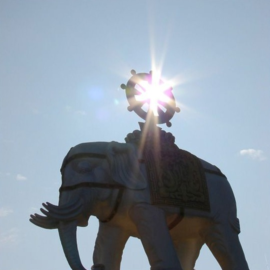

又累又脏的我们，在洗象池庙里三十块一晚的简陋床位上也睡不到几个小时，凌晨三点便匆匆起床上山了，为的是在日出前能站在峨眉金顶上静静地等待那一刻的来临。此次三点钟的夜路，我们和另外一对情侣同行，这时的心情已不象前一天晚上的那般焦虑不安，多了几分等待胜利的喜悦。四个人，一个电筒，安静地在山间穿行，不知走了多少路，也不知错过的两边景色是否迷人，只是偶尔回头看看远处底下云海中间黑黑的山头，山上偶尔亮起的小店中的灯光，却也和我们头上的月亮一般温暖明亮。 将近三个小时的跋涉，我们终于看到了水泥马路，这表示我们已经到达了上金顶的最后一小段路了，只要到达缆车站，几分钟以后我们便能在三千多米的金顶了。游人立刻多了起来，几乎全是在旁边的旅馆舒适地睡了一晚，起来坐缆车去看日出的人们。而我们这些拿着拐杖，挽着裤脚，鞋上全是泥的，走路都艰难的人们，对他们表示极大的鄙视。
最终随着人群登上了金顶，这里晴空万里天气很好，但接下来等日出的时间还是有点长，天都已经大亮了还没看见太阳。不少人们已经觉得看不到日出而离开了。而我们盯着远处白茫茫的云海，深信上天不会对我们这些累了一天的人那么残酷。并终于，在七点左右等到了云海中升起的那一个小红圆圈。由于相机和摄影技术的限制，我们没有拍得一张满意的照片回家。但景在心中，也许今后我坐着车舒舒服服地再来到金顶，拍下一张很好的照片，也没有这一刻的喜悦来得印象深刻，这是洗刷我们一路跋涉劳累最好的良药。 金顶上景色很漂亮，虽然四大奇观——“云海、日出、佛光、圣灯”，我们只欣赏到两个，但也心满意足。天非常的蓝，太阳与月亮共处在天上的两端，我们感觉与太阳距离如此地近，以至回来以后掉了几层皮，晒的……
